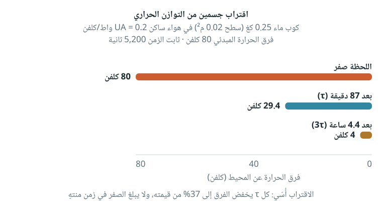

التوازن الحراري
التوازن الحراري حالة يتوقف فيها انتقال الحرارة الصافي بين جسمين متلامسين لأن حرارتهما تساوت، فالتدفق الحراري يصبح صفرًا. وهو شرط قراءة الترمومتر، والأساس الذي يجعله يقيس حرارة الجسم لا حرارة نفسه.
التوازن الحراري يعني تساوي متوسط الطاقة الحركية للجزيئات عند السطح المشترك، فلا تُنقل حرارة صافية من أحدهما إلى الآخر. ويُقاس الاقتراب من التوازن بثابت زمني τ = m·cp/(U·A): كلما زادت الكتلة أو السعة الحرارية تأخر التوازن، وكلما زاد معامل الانتقال ومساحة السطح تسارع. لكوب ماء بكتلة 0.25 كغ وسعة 4182 جول/(كغ·كلفن) يفقد حرارته إلى هواء ساكن من سطح 0.02 م² إلى هواء ساكن (h = 10 واط/(م²·كلفن)، أي UA = 0.2 واط/كلفن) يكون τ ≈ 5,200 ثانية: فرق حرارة مبدئي 80 كلفن يصبح 29 كلفن بعد 87 دقيقة، و4 كلفن بعد 4.4 ساعة. ولا يُقال إن الجسمين تعادلا إلا حين يصبح الفرق أصغر من دقة الترمومتر.
كيف تعمل الظاهرة؟
الحرارة تنتقل عند السطح بثلاث آليات تعمل معًا: التوصيل عبر التلامس، والحمل في طبقة الهواء أو المائع المحيط، والإشعاع الذي لا يتوقف إلا عند تساوي حرارة السطحين وثبات المحيط. ومع اقتراب الحرارتين يضعف دافع الانتقال في كل آلية، فيتباطأ التدفق، وينتج من ذلك بروفايل أُسّي لا خطّي. وبعد بلوغ التوازن لا تتوقف الحركة الجزيئية، بل يتساوى معدل الطاقة الخارجة والداخلة من كل حجم صغير، فيبقى السطح في حالة مختلطة لا تُرى بالترمومتر.
العلاقة بالأرقام
ثابت الزمن τ = m·cp/(U·A) = 0.25×4182/(10×0.02) = 5,228 ثانية (87 دقيقة). الفرق بعد τ واحدة = 37% من الأصل أي 29.4 كلفن، وبعد 3τ = 5% أي 4.0 كلفن. والتبريد إلى 1% يحتاج 4.6τ ≈ 6.7 ساعة في هذا المثال. وتُختصر الحسابات في الأنظمة المركّبة بسعة حرارية كلية ومقاومة حرارية كلية بدل الحرارة الداخلية وحدها.
مفاهيم متقاربة
التوازن الحراري ليس التوازن الديناميكي الحراري: الثاني يشترط أيضًا تساوي الضغط والكمون الكيميائي وتوقف أي تغيّر داخلي، وقد يتوازن جسمان حراريًّا وهما يتبادلان مادة عبر غشاء. وليس كذلك الحالة المستقرة (steady state) التي يبقى فيها التدفق حراريًّا ثابتًا غير صفري برغم ثبات الحرارة عند نقطة القياس، كما في جدار يُدفأ من جهة ويُبرّد من أخرى فلا تصل حرارته إلى حرارة المحيط أبدًا.
حدود التطبيق
الاعتماد على τ يفترض معامل انتقال ثابت وسعة حرارية غير متغيّرة، ويسقط إذا تغيّر الطور (تبخّر، انصهار) لأن الحرارة الكامنة تُبطئ التوازن بلا تغيّر في الحرارة. وفي الأجسام الكبيرة — كتلة مبنى أو خزان ماء — يتجاوز زمن التوازن ساعات وأيامًا، فيُقاس الأداء بحرارة الإرجاع وثبات التدفق لا بالتوازن. والترمومتر يقيس حرارة نفسه بعد أن يتوازن مع الجسم، فهو لا يقرأ الحرارة لحظيًّا بل بعد تأخير يحدده حجم بصيلته وموضعها.

| الكمية | القيمة | المصدر |
|---|---|---|
| ثابت الزمن لكوب ماء 0.25 كغ مع هواء ساكن (UA = 0.2 واط/كلفن) | 5,200 ثانية | [1] |
| فرق الحرارة المتبقي بعد ثابت زمن واحد | 29 كلفن | [1] |
| الحرارة النوعية للماء عند 20 °م | 4182 جول/(كغ·كلفن) | [2] |
| شرط التوازن | Φ = 0 واط | [3] |
المصادر
- 1 Newton's law of cooling — Wikipedia. en.wikipedia.org/wiki/Newton%27s_law_of_cooling · اطُّلع عليه 2026-11-19
- 2 Water - Specific Heat — The Engineering ToolBox. www.engineeringtoolbox.com/specific-heat-capacity-water-d_660.html · اطُّلع عليه 2026-11-19
- 3 Thermal equilibrium — Wikipedia. en.wikipedia.org/wiki/Thermal_equilibrium · اطُّلع عليه 2026-11-19
استشهد بهذا المصطلح
الصيغتان مبنيتان من بيانات الصفحة نفسها: العنوان والتاريخ ورابط النسخة المنشورة.
التوازن الحراري. (2026). ديوان المعرفة — انفراد. https://infiradev.com/diwan/terms/thermal-equilibrium.html
@misc{thermal-equilibrium2026,
title = {التوازن الحراري},
howpublished = {{ديوان المعرفة — انفراد} — مرجع علمي عربي},
year = {2026},
url = {https://infiradev.com/diwan/terms/thermal-equilibrium.html},
urldate = {2026-11-19},
note = {مراجعة علمية: عبدالله الهويدي — مراجعة في تطبيق انفراد}
}
راجعه: عبدالله الهويدي — مراجعة في تطبيق انفراد · 2026-11-19 · آخر تحديث 2026-11-19